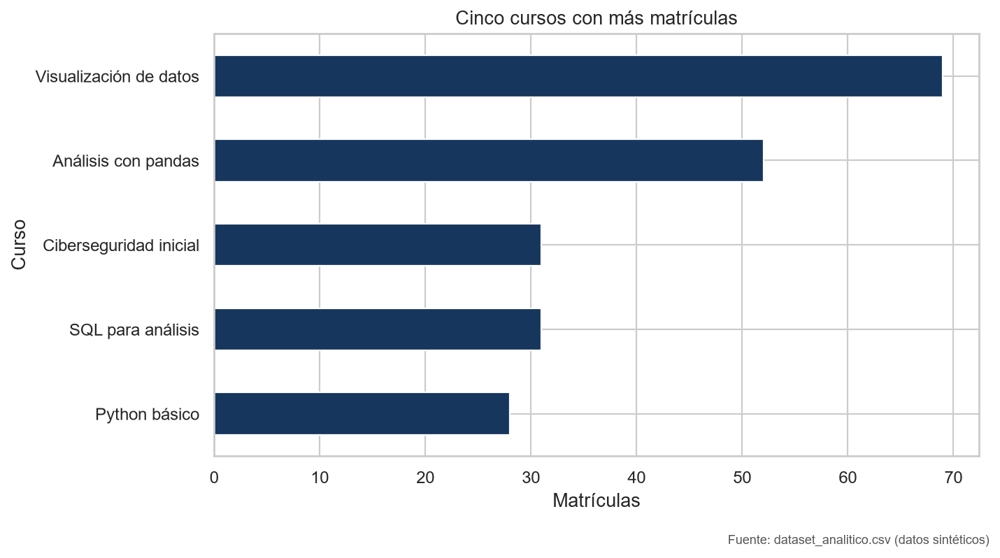
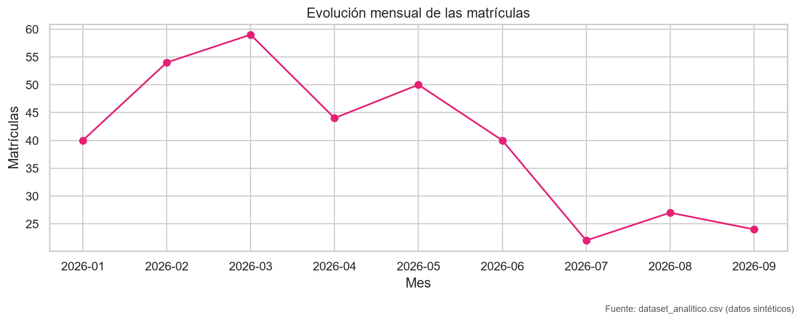
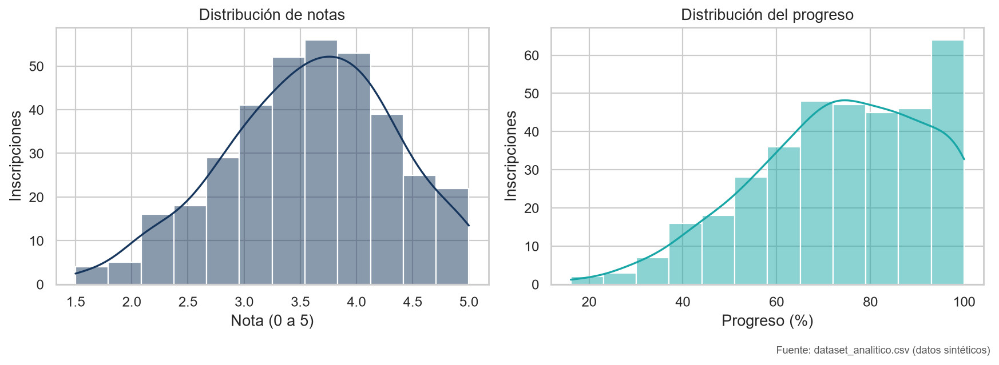
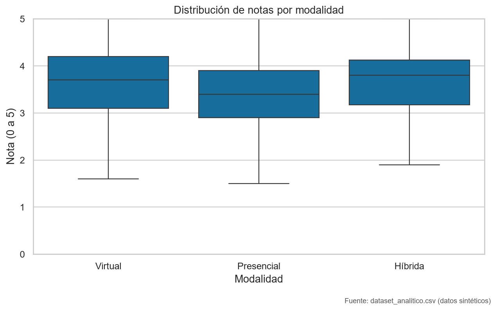
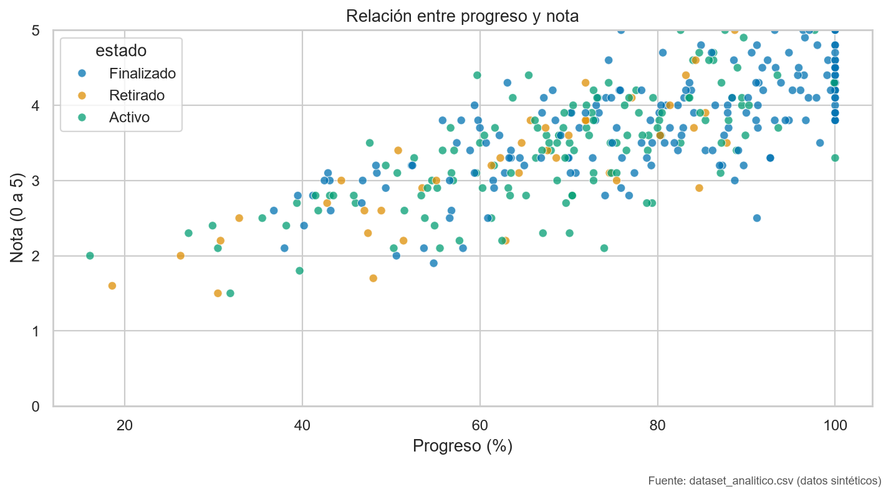
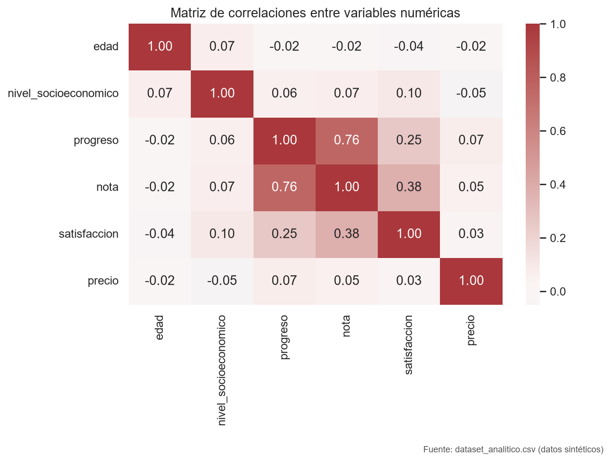
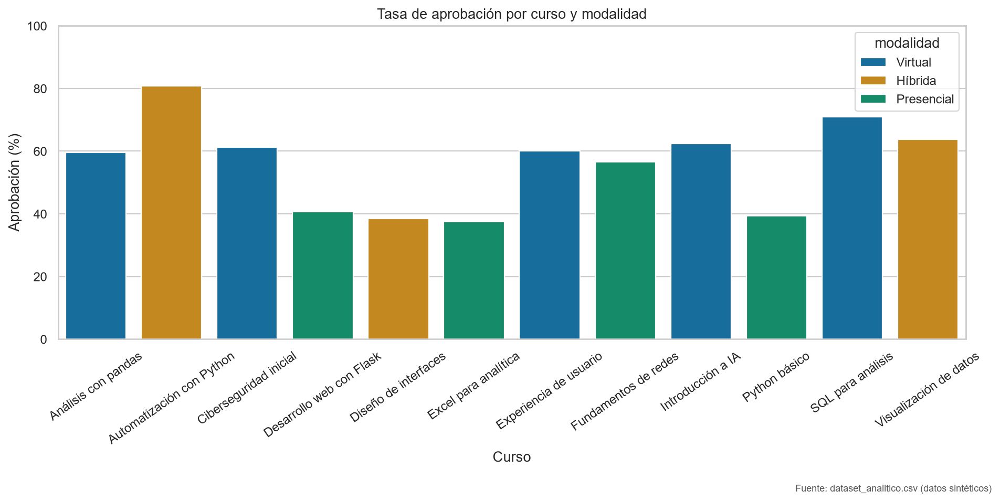
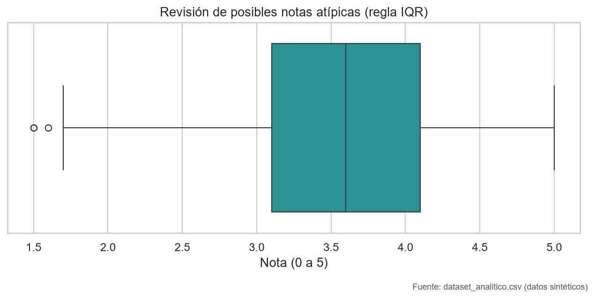
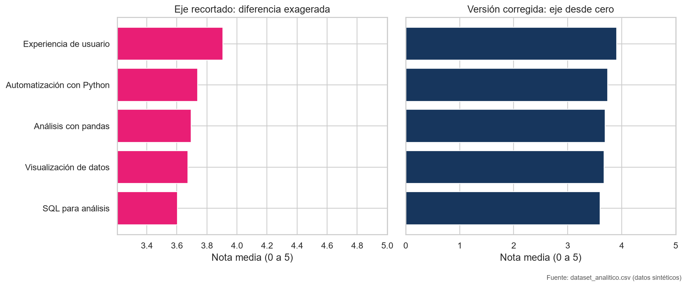

RESULTADOS
Qué muestran los datos
El periodo observado va de enero a septiembre de 2026. Cada conclusión describe el conjunto sintético entregado.

La demanda se concentra en pocos cursos
Hallazgo: Visualización de datos reúne 69 matrículas; Análisis con pandas le sigue con 52.
Recomendación: revisar cupos y disponibilidad docente en los cursos con mayor demanda.

Las matrículas varían a lo largo del periodo
Hallazgo: marzo alcanza el máximo observado, con 59 matrículas; julio registra 22.
Recomendación: planificar la oferta con los registros de cada periodo y actualizar la serie cuando haya nuevos datos.

Notas y progreso tienen distribuciones distintas
Hallazgo: la mediana de nota es 3,60 sobre 5 y la mediana de progreso es 75,15 %.
Recomendación: revisar en conjunto ambos indicadores antes de decidir apoyos académicos.

La mediana más alta aparece en modalidad híbrida
Hallazgo: la mediana híbrida es 3,8; la virtual, 3,7; y la presencial, 3,4.
Recomendación: comparar tamaños de grupo y características de los cursos; la diferencia observada no prueba un efecto de la modalidad.

Progreso y nota muestran asociación positiva
Hallazgo: la correlación de Pearson es 0,76 en las 360 inscripciones.
Recomendación: usar ambos indicadores para orientar revisiones; una correlación no establece causalidad.

Las asociaciones resumen relaciones, no explicaciones
Hallazgo: entre las variables numéricas revisadas, progreso y nota presentan la asociación lineal de mayor magnitud.
Recomendación: complementar estas comparaciones con contexto académico antes de atribuir causas.

Excel para analítica merece una revisión
Hallazgo: su tasa de aprobación observada es la menor, 37,5 %, calculada con la definición del conjunto de datos.
Recomendación: revisar con el equipo académico los resultados y necesidades de acompañamiento de ese curso.

Los valores atípicos son una señal para comprobar
Hallazgo: la regla del rango intercuartílico identifica 3 posibles casos entre 360 registros.
Recomendación: verificar esos registros; ser atípico no significa necesariamente que el dato sea incorrecto.

Corregir la escala evita exagerar diferencias
Hallazgo: al recortar el eje de las barras, diferencias pequeñas parecen mucho mayores.
Recomendación: comparar las notas con un eje que comience en cero y conservar la escala completa de 0 a 5.
EXPLORACIÓN
Gráfico interactivo
Pasa el cursor sobre los puntos para consultar detalles. Usa la leyenda para explorar los estados.
CIERRE
Recomendaciones para revisar
- Contrastar la demanda de los cursos líderes con los cupos y la disponibilidad de docentes.
- Revisar los resultados de Excel para analítica junto con el equipo académico, sin asumir causas a partir de la tasa por sí sola.
- Validar los tres casos señalados por el rango intercuartílico antes de interpretarlos como errores.
Los datos son sintéticos y describen el conjunto entregado. Estas observaciones no deben generalizarse a estudiantes reales.